Salón de belleza y estética
Buchona's Beauty Salon, en Irun
Estética facial, cabello, pestañas, cejas, labios y uñas. Arelis y Dennise, hermanas, han creado un espacio con un servicio profesional y diseñado a tu medida.
Reservar citaLas citas se reservan online. ¿Dudas? Llama al 943 90 69 15 o escribe por Instagram.
Servicios
-
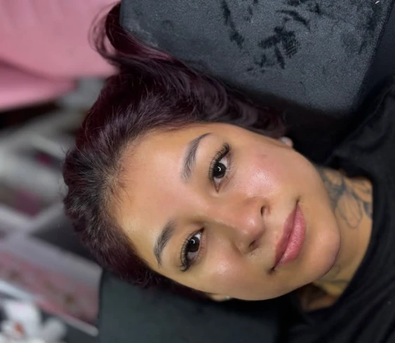
Facial
Higiene facial personalizada, rituales Goddess Glow y Jade, y efecto Glass Skin.
Desde 65 €
Conoce a Dennise -
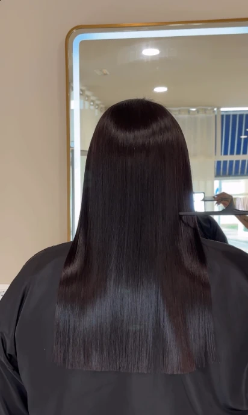
Cabello
Bótox capilar, alisado orgánico, repolarización Glow y oxigenación marina.
Desde 35 €
Ver tratamiento -
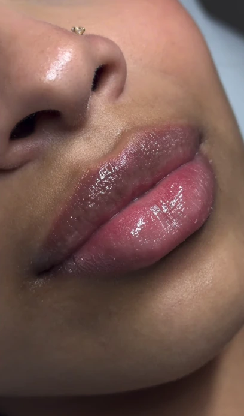
Labios
Hidratación profunda de labios, en tres sesiones.
140 € las tres sesiones
Ver antes y después -
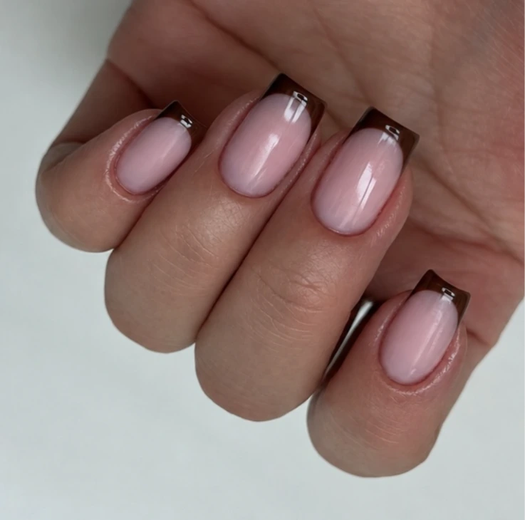
-
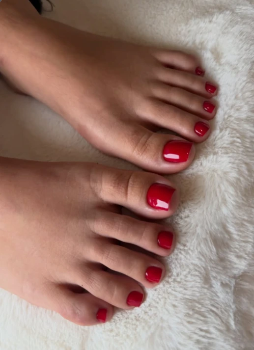
-
Diseño de mirada
Cejas y pestañas
Diseño, tinte y laminado de cejas; lifting y extensiones pelo a pelo.
Desde 13 €
Pedir cita
Precios orientativos. Elige servicio, día y hora en nuestra agenda online.
-
Bótox capilar
Se ajusta al largo de tu melena, de corta a XL, y tiene su versión para pelo rizado: Curly Bótox. Lo hace Arelis, técnico especialista capilar, en una sesión de entre dos horas y media y tres.
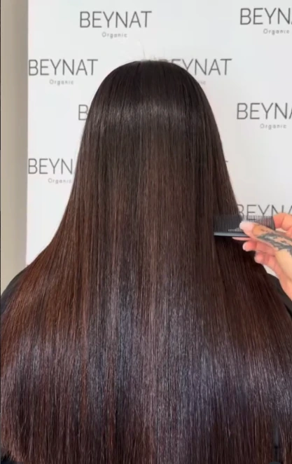
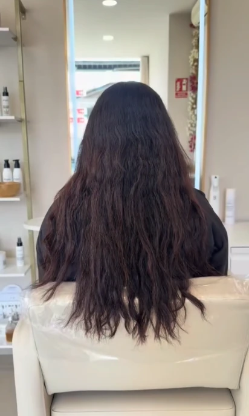
-
Hidratación de labios
Un tratamiento de hidratación profunda que suaviza y rejuvenece los labios. Son tres sesiones de 40 minutos.
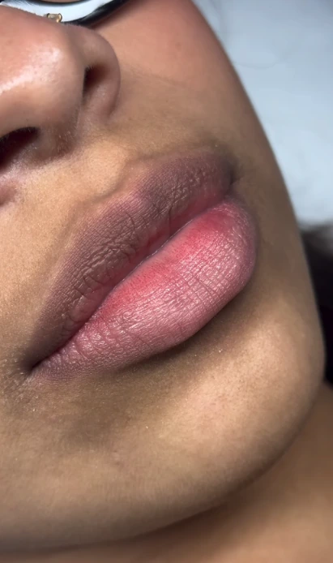
Elige tu servicio y tu hora en la agenda online.
Reservar citaGalería
Trabajos del salón: cabello, uñas y labios.
-
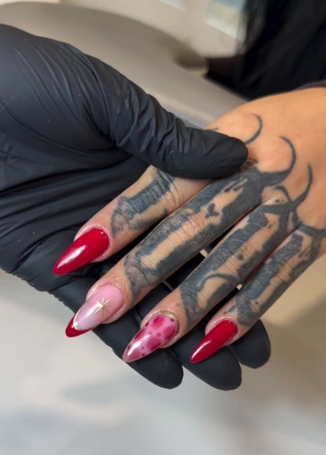
-
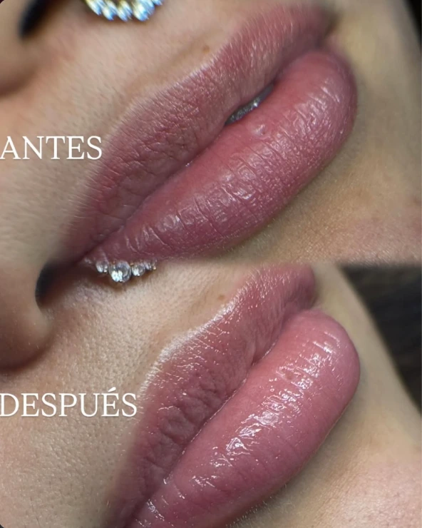
-
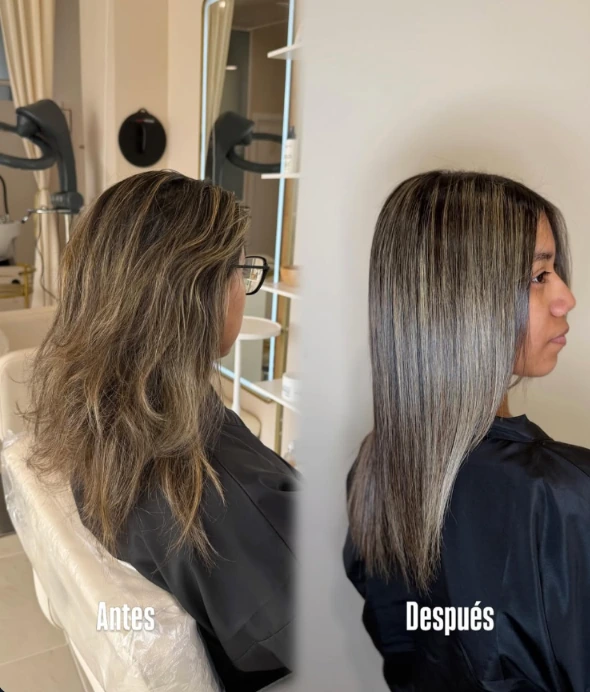
-
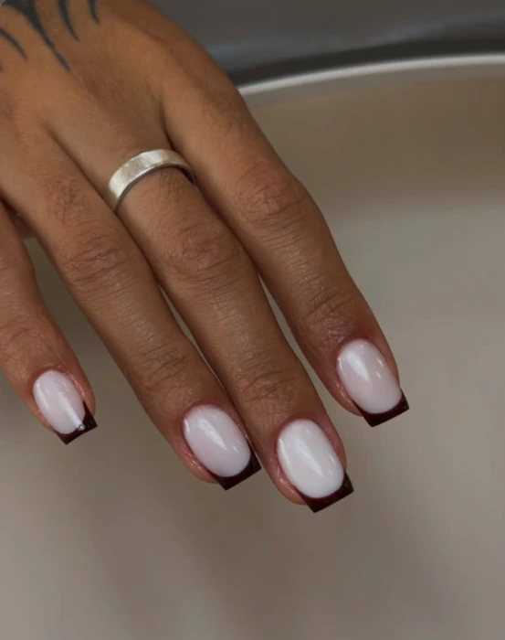
-
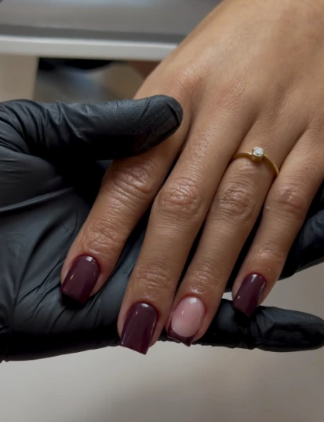
-
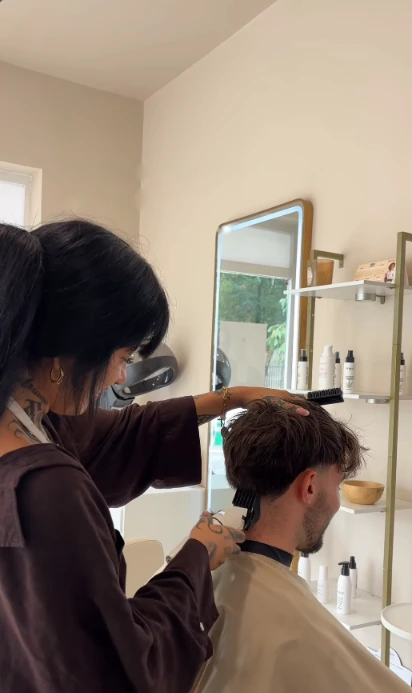
-
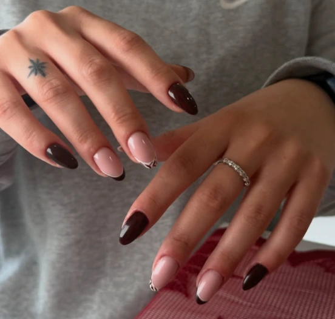
-
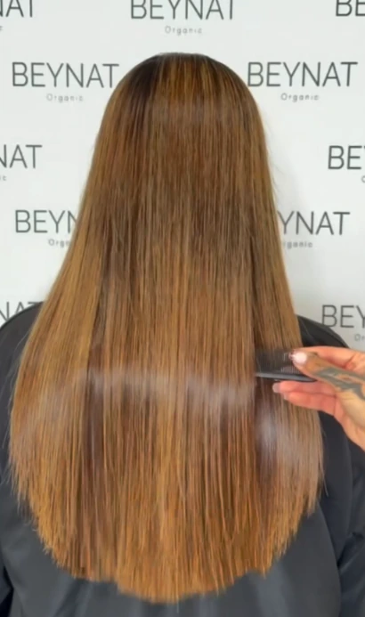
-
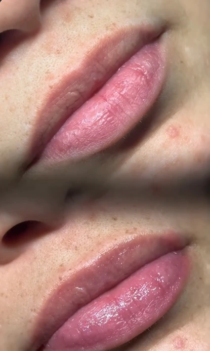


Arelis y Dennise
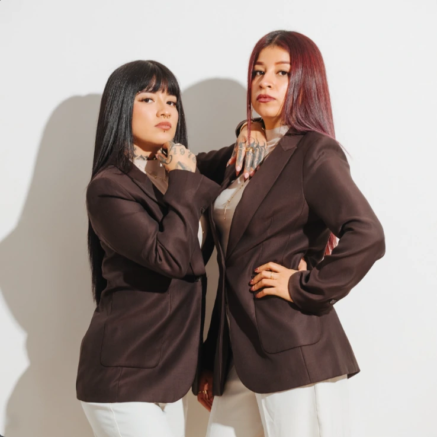
Arelis y Dennise Quilligana son hermanas y juntas han creado Buchona's Beauty Salon, en Irun.
Arelis es técnico especialista capilar y lashista: suyos son el bótox capilar, el alisado orgánico y las pestañas. Dennise es especialista en estética facial: higiene facial, rituales, dermapen y diseño de cejas.
-
Hacía mucho que no me hacía una limpieza de cara tan profunda. Se nota lo profesionales y dulces que son. Un sitio para recomendar y tenerlo como lugar de confianza para las mujeres.
Cristina Muñoz Hernández -
Me hice el tratamiento botox en el pelo y estoy encantada. Se me ve el pelo mucho más sano. Además, las chicas son muy simpáticas. ¡Recomiendo 100%!
Sylvia Andrés -
Es la segunda vez que acudo a hacerme extensiones de pestañas. El trato es inmejorable y son muy profesionales. ¡Lo recomiendo!
Freya -
Las chicas son muy majas, el sitio es precioso, un local nuevo con mucho estilo y el tratamiento de 10.
Aran Sánchez
Contacto
Reserva tu cita en Irun.
Las citas de Buchona's Beauty Salon se reservan online. Si tienes alguna duda, también puedes llamar o escribir por Instagram.
Reservar citaHorario
| Lunes a viernes | 9:30–18:30 |
|---|---|
| Sábado | 9:00–13:00 |
| Domingo | Cerrado |